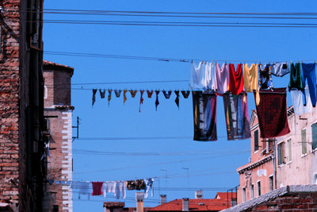

All images on these pages are copyright © 1999 by Holly Smith Pedlosky
To learn more, send e-mail to Holly Smith Pedlosky
| Would you
like to meet some more Venetian housewives? |
Would
you like to see some more Laundry? |
Would
you like to find out more about laundry, cloth, and draped fabric in Venetian art? |